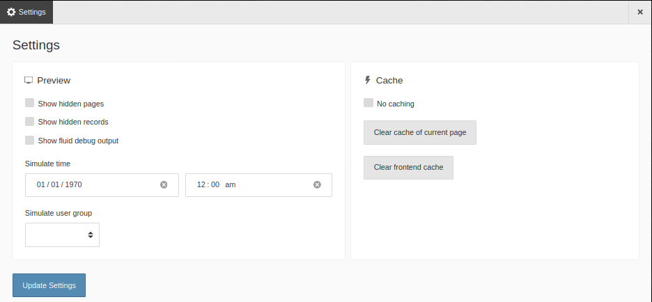

Settings¶
The Settings section of the Admin Panel can be useful for editors and integrators to simulate user groups and times, and to show hidden content. It also lets you work with the cache.

The Settings screen of the Admin Panel
Simulate users and times¶
Use the Simulate time control to specify a time for the page. This is particularly useful for editors who want to verify the display of scheduled or seasonal content.
Use the Simulate user group control to impersonate a particular user group when viewing the page. This is useful for editors who want to verify the display of restricted or permissions-based content.
Work with the cache¶
Use the controls in this section to clear the current page from the cache, to clear the entire frontend cache or to turn off caching altogether.